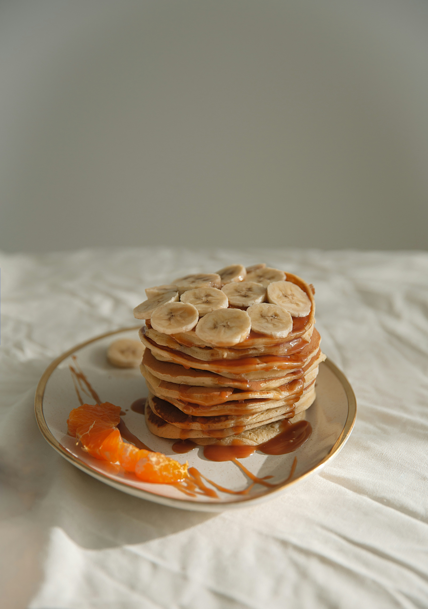

Banana Pancakes

Crowd-pleasing banana pancakes made from scratch that are ready in minutes.
A fun twist on ordinary pancake
Wake up on the right side of the bed with a stack of sweet, cozy, and simple banana pancakes. This top-rated banana pancake recipe is easy to make and it comes together in just 15 minutes,
so you don't have to wake up early to enjoy a satisfying breakfast.
Learn how to make, store, and serve the best banana pancakes ever.
Ingredients
- flour
- Sugar
- Salt
- Baking Powder
- An Egg
- Milk
- Vegetable Oil
- Bananas
Steps
- Mix:
Combine your dry ingredients (flour, sugar, salt, baking powder) in one bowl and your wet ingredients
(egg, milk, vegetable oil, mashed bananas) in another bowl.
Add the dry ingredients to the bowl with the wet ingredients,
then stir until they're incorporated. It's OK if your batter is slightly lumpy.
- Mix:
Combine your dry ingredients (flour, sugar, salt, baking powder) in one bowl and your wet ingredients (egg, milk, vegetable oil, mashed bananas) in another bowl.
Add the dry ingredients to the bowl with the wet ingredients, then stir until they're incorporated.
It's OK if your batter is slightly lumpy.
- Serve:
Serve your banana pancakes immediately.
They're delicious alone or with your favorite pancake toppings.